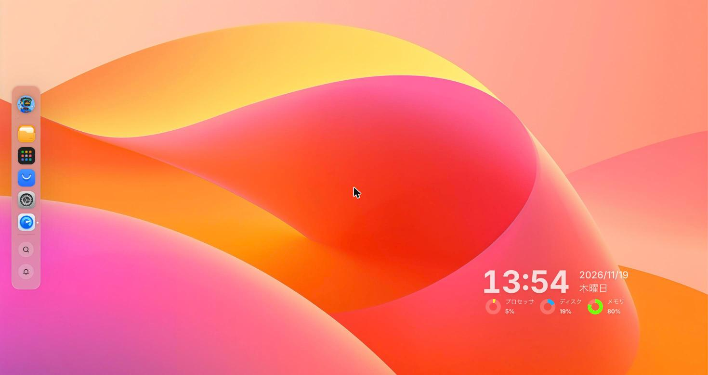
Olaresはブラウザから使います。PC・タブレットのブラウザで次のアドレスを開きます。ログインには、スマートフォンの LarePass アプリ（2章）が必要です。
| デスクトップ | https://desktop.<ユーザー名>.olares.com（例：Olares ID が alice123@olares.com なら https://desktop.alice123.olares.com） |
|---|
アドレスを開くと、未ログインの場合はログイン画面に移動します。
Olaresのログインパスワードを入力します。
二段階認証を行います。次のどちらかの方法を使います。
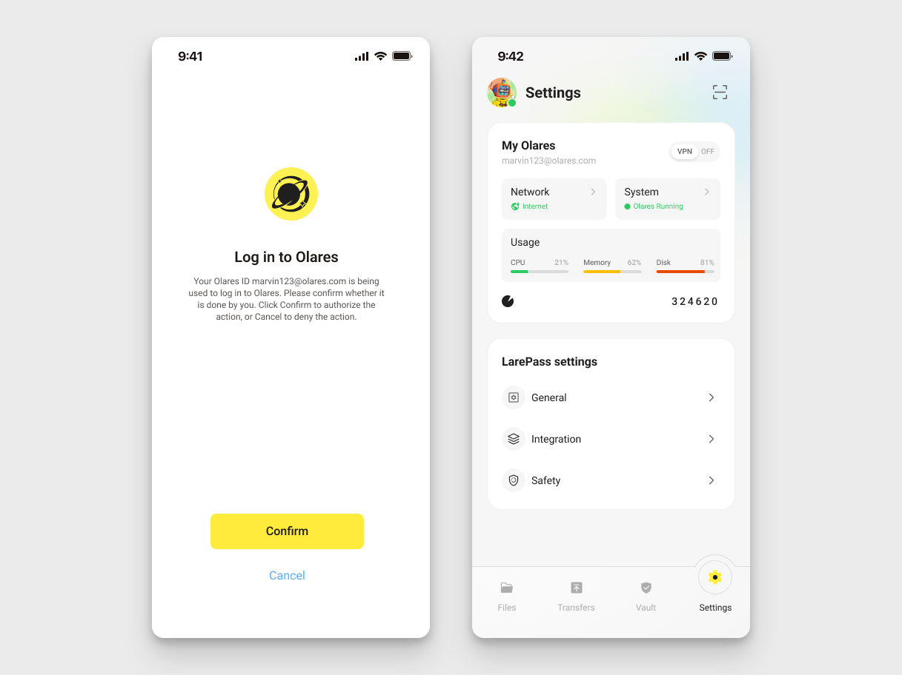
デスクトップ（4章）が表示されれば完了です。
LarePass は Olares 公式のクライアントアプリです。スマートフォン（iOS / Android）版、PC版、Chrome拡張があります。主に次のことに使います。
Olares ID は Olares を使うための個人のIDです。メールアドレスのような形をしています。
| 例 | alice123@olares.com |
|---|---|
| ローカル名 | alice123（@の前。デスクトップのアドレスにも使われます） |
| ドメイン | olares.com（@の後ろ。参加するOlaresと同じドメインにする必要があります） |
スマートフォンに LarePass をインストールして開きます（App Store / Google Play で「LarePass」と検索）。
Create an account（アカウントを作成） をタップします。
使いたいIDを入力して Continue（続行） をタップします。IDは8〜24文字で、使えるのは半角の小文字と数字だけです。
作成が終わると、ホーム画面にIDが表示されます。作ったID（ローカル名@ドメイン）を管理者に伝えてください。
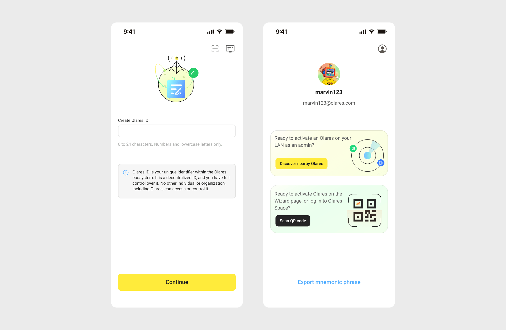
Olaresを複数人で使うときは、管理者が利用者ごとにユーザーを追加します。追加できるのは スーパー管理者 または 管理者 だけです。流れは次のとおりです。
| ①利用者 | LarePassで Olares ID を作り、IDを管理者に伝える（2章） |
|---|---|
| ②管理者 | 設定でユーザーを追加し、ウィザードURLとワンタイムパスワードを利用者に渡す |
| ③利用者 | ウィザードとLarePassでアカウントを有効化し、ログインする |
設定 › ユーザー を開き、右下の ユーザーを追加 をクリックします。
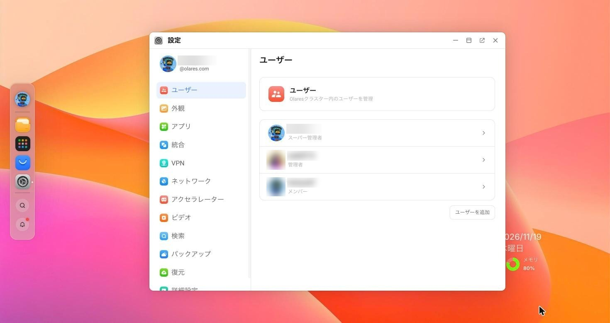
次の項目を入力します。
| Olares ID | 利用者が作ったIDの @より前の部分だけ（例：alice123） |
|---|---|
| ロール | メンバー（一般の利用者）または 管理者。管理者を作れるのはスーパー管理者だけです |
| CPU | そのユーザーに割り当てるCPU（最小1コア） |
| メモリ | そのユーザーに割り当てるメモリ（最小3GB。初期値は4GiB） |
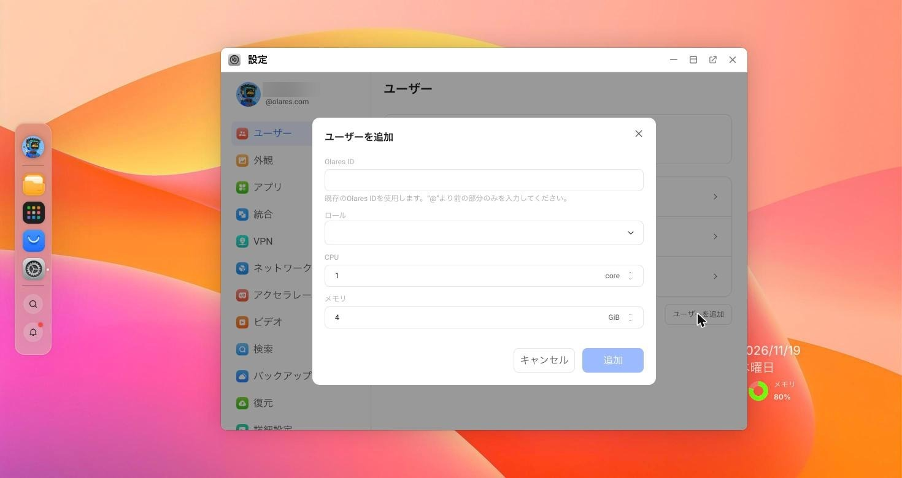
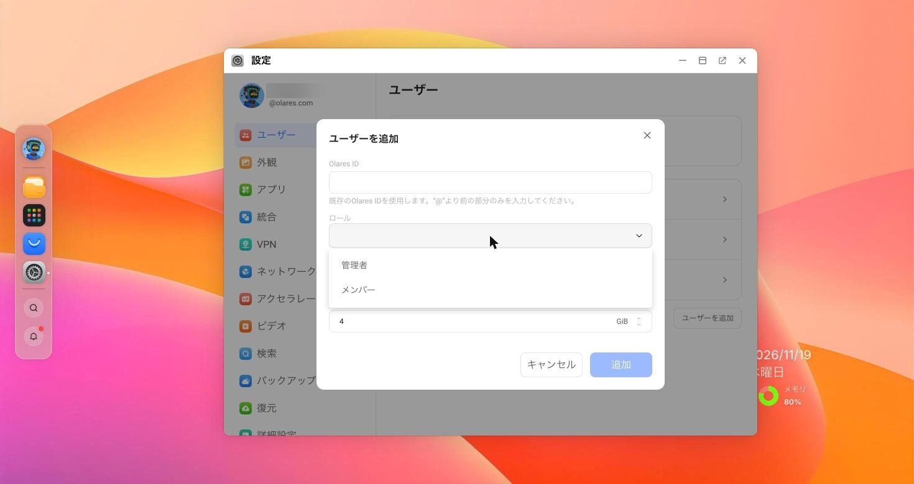
追加 をクリックします。完了すると ウィザードURL と ワンタイムパスワード が表示されるので、利用者に渡します。
利用者が有効化を済ませたかは、設定 › ユーザー で該当ユーザーを開き、アカウント情報 の 状態 欄で確認できます。同じ画面では、リソースの割り当て変更、パスワードのリセット、ユーザーの削除もできます。
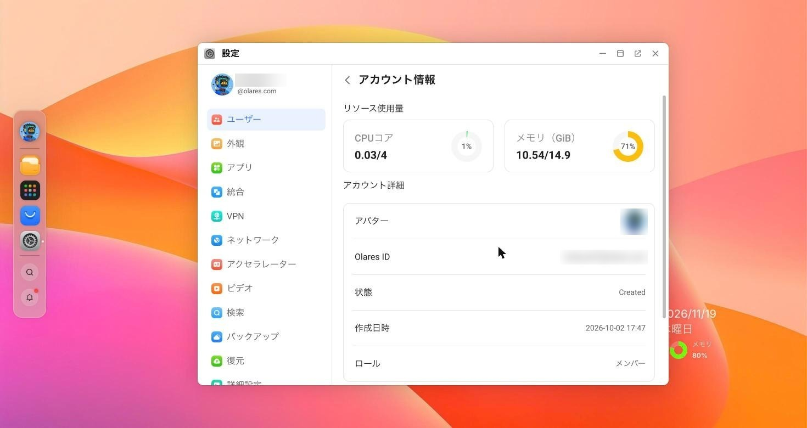
Olares本体に触らなくても、ブラウザとスマートフォンだけで有効化できます。
管理者から受け取った ウィザードURL をPCのブラウザで開き、何かキーを押して進みます。
ワンタイムパスワード を入力して Continue（続行） をクリックします。
表示言語（日本語など）を選びます。選んだ言語は、有効化後のデスクトップにも使われます。
ブラウザにQRコードが表示されます。LarePassの Scan QR code（QRコードをスキャン） をタップして読み取ります。
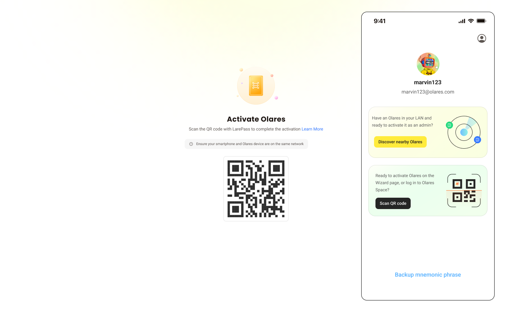
LarePassの画面の案内に従って、Olaresのログインパスワードを新しく設定します。
完了すると、LarePassはホーム画面に戻り、ブラウザはログイン画面に移ります。あとは1章の手順でログインします。
| 操作 | メンバー | 管理者 | スーパー管理者 |
|---|---|---|---|
| アプリを使う／マーケットから通常のアプリを入れる | ○ | ○ | ○ |
| 共有アプリのインストール・停止・削除 | × | ○ | ○ |
| システムリソースの管理、Olaresの更新 | × | ○ | ○ |
| メンバーの追加・編集・削除 | × | ○ | ○ |
| 管理者の追加・編集・削除 | × | × | ○ |
スーパー管理者は、Olaresを最初に有効化したユーザーです。
画面左のバー（ドック）から主な機能を開けます。上から順に次のとおりです。
| アイコン | 機能 |
|---|---|
| アバター（一番上） | 自分のアカウント情報 |
| フォルダ（黄色） | ファイルマネージャー：ファイルの保存・閲覧（11章） |
| 9つの点（黒） | ランチャー：インストール済みアプリの一覧（5章） |
| 買い物袋（青） | マーケット：アプリの追加・停止・削除（7〜9章） |
| 歯車（灰色） | 設定：ユーザー、外観、アプリ、ネットワークなど |
| メーター（青） | ダッシュボード：CPU・メモリ・GPUなどの使用状況（10章） |
| 虫眼鏡 | 検索 |
| ベル | 通知（赤い点は未読の通知あり） |
右下のウィジェットには、時刻と プロセッサ・ディスク・メモリ の使用率が表示されます。ドックのアイコン右の小さな点は、そのアプリのウィンドウが開いていることを示します。
ドックの ランチャー（9つの点のアイコン）をクリックします。
開きたいアプリのアイコンをクリックします。上部の検索欄に名前を入れて絞り込むこともできます。
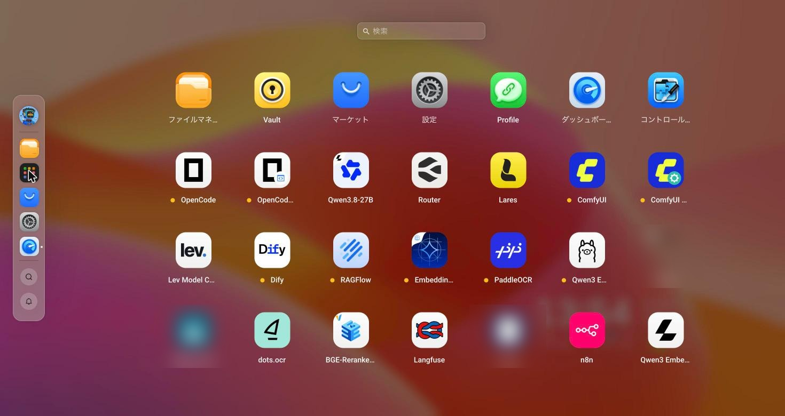
ウィンドウ右上のボタンで操作します（左から）。
| － | 最小化（ドックのアイコンをクリックすると戻る） |
|---|---|
| □ | 最大化／元のサイズに戻す |
| ↗ | ブラウザの新しいタブで開く |
| × | 閉じる（アプリ自体は動き続けます） |
アプリのアイコンやマーケットのカードには、アプリの種類や状態を表すマークが付いています。
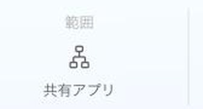
アイコン右下の 緑の丸に人型のマーク は 共有アプリ の印です。アプリの詳細ページでは 範囲 欄に「共有アプリ」と表示されます。
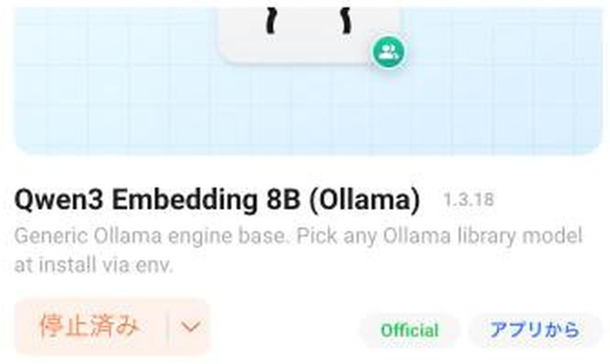
| Official | 公式マーケットから入れたアプリ |
|---|---|
| アプリから | 別のアプリをもとに作られたアプリ（インスタンス）です。例：エンジンベース（Ollama Engine Base など）から作ったモデルのアプリ |
| Clone | アプリをクローン（複製）して作った2つ目以降のアプリ |
| 場所 | 表示 | 意味 |
|---|---|---|
| ランチャー | 名前の左の黄色い点 | 停止中のアプリ |
| ドック | アイコン右の小さな点 | ウィンドウを開いているアプリ |
| ドック | ベルの赤い点 | 未読の通知がある |
| マーケットのボタン | 開く／実行中 | 動作中 |
| 停止済み（オレンジ） | 停止中（データは残っている） | |
| 更新 | 新しいバージョンがある | |
| マーケット左メニュー | 「更新」の横の数字 | 更新できるアプリの数 |
| 設定 › アプリ | 緑／赤の点 | 実行中／停止済み |
ドックの マーケット を開きます。トップの 発見 にはおすすめアプリが並び、左のカテゴリー（エージェント・モデル・ワークスペースなど）から探すこともできます。
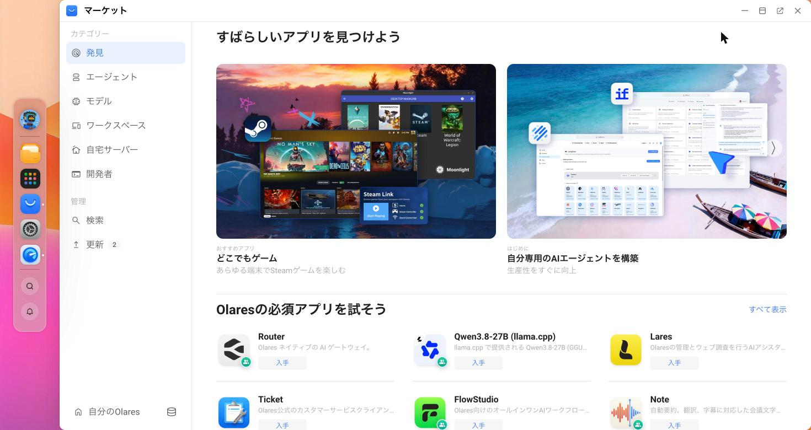
名前が分かっている場合は、左メニューの 検索 を開き、アプリ名を入力して Enter キーを押します。
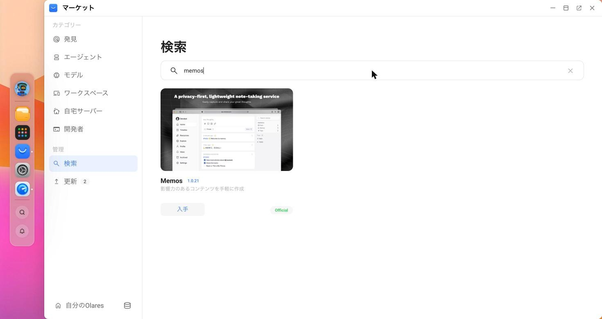
アプリのカードをクリックすると詳細ページが開きます。リソース 欄で、必要なCPU・メモリ・ディスク容量を確認します。
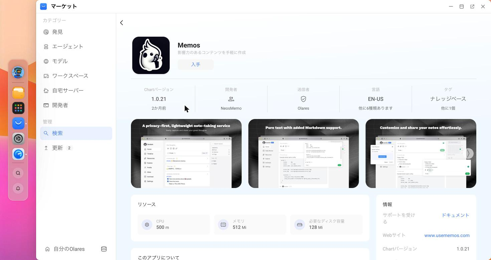
入手 をクリックするとボタンが インストール に変わります（横にダウンロードサイズが表示されます）。もう一度クリックするとインストールが始まります。
インストール中は進み具合が％で表示されます。右の × で中止できます。
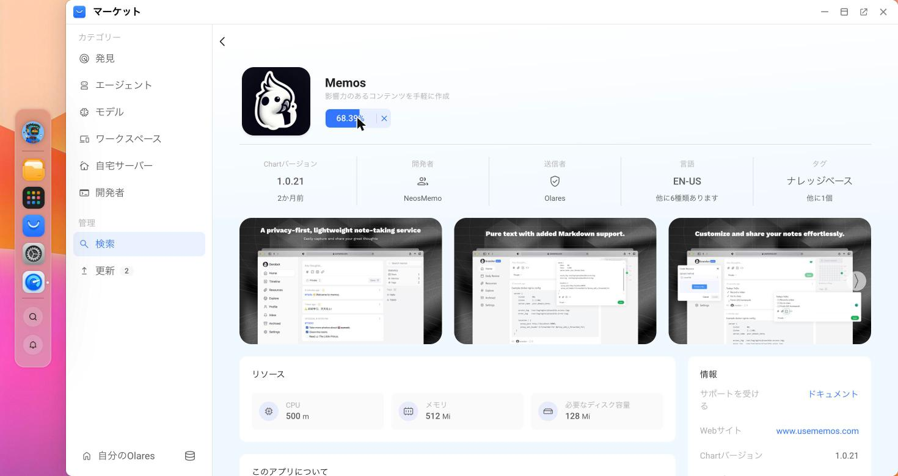
完了するとボタンが 開く に変わり、ランチャーにもアイコンが追加されます。
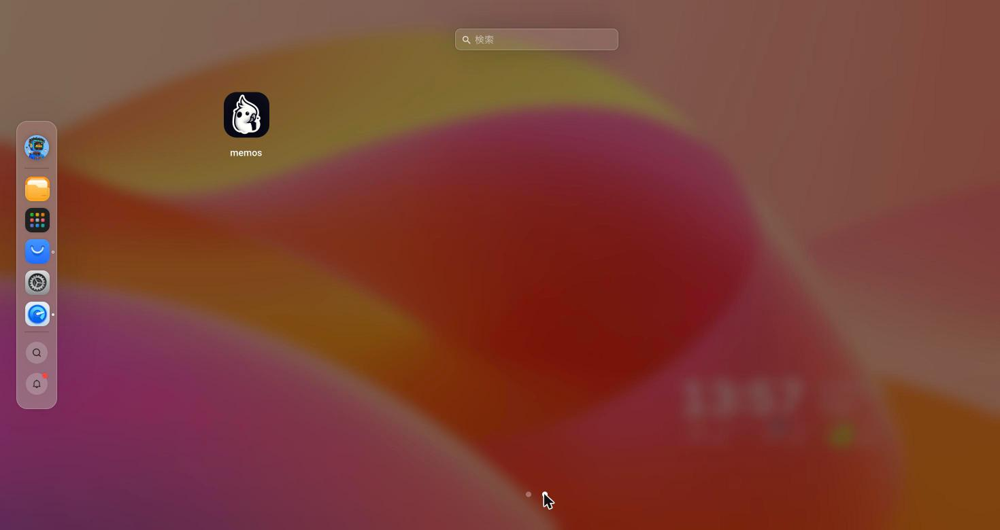
アイコンをクリックしてアプリを開きます。初回起動時はアプリ独自の初期設定（管理者アカウントの作成など）が表示されることがあります。
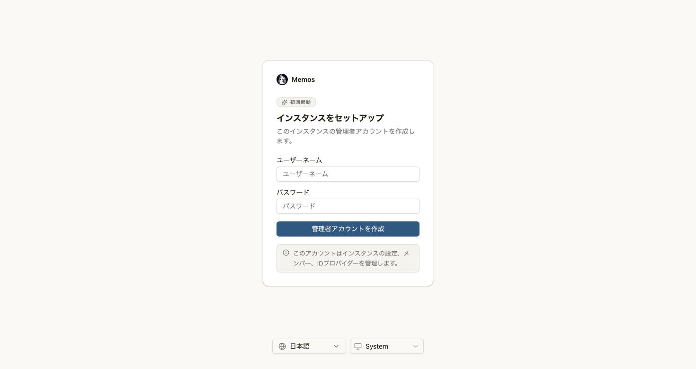
使わないアプリを停止すると、CPU・メモリ・GPUが解放されます。データは消えません。
マーケット左下の 自分のOlares を開きます。インストール済みのアプリが一覧表示されます。
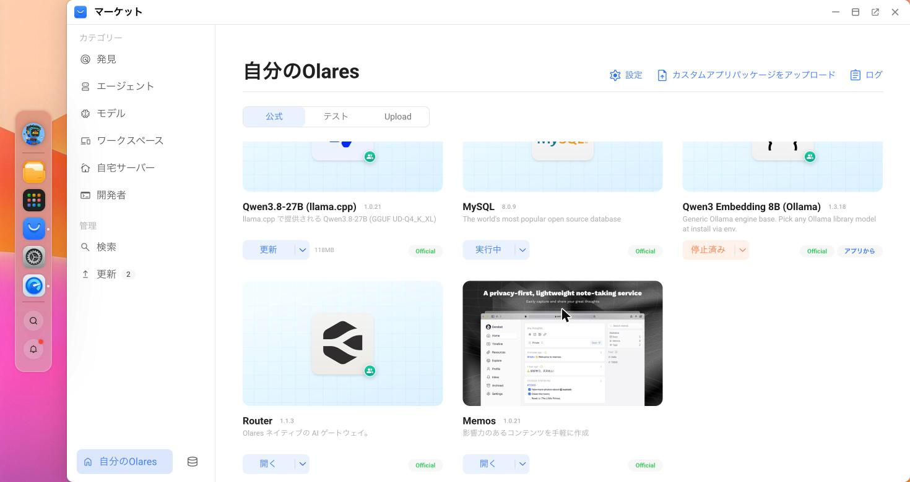
対象アプリの 開く ボタン右の ∨ をクリックし、停止 を選びます。
ボタンが 停止中 になり、しばらくするとオレンジ色の 停止済み に変わります。
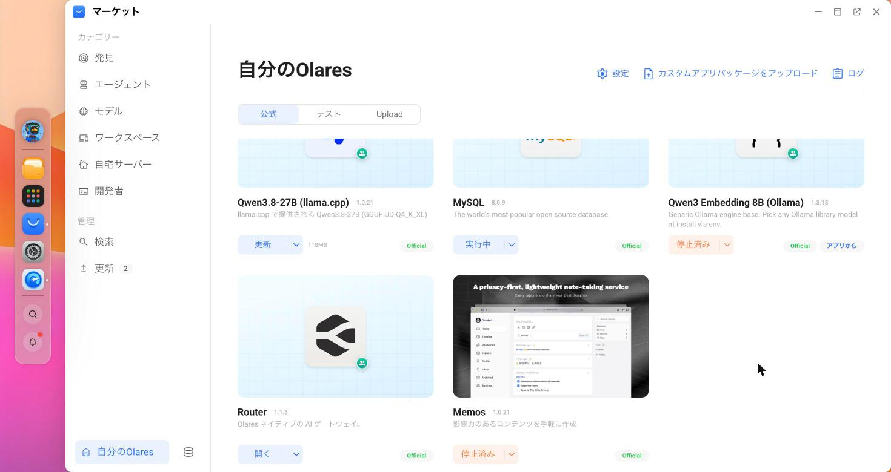
停止済み の右の ∨ をクリックし、再開 を選びます。
再開中 の表示のあと、ボタンが 開く に戻れば利用できます。
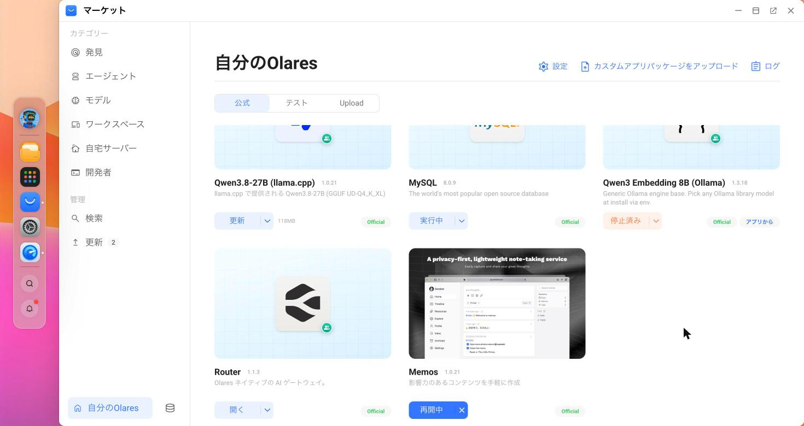
自分のOlares で対象アプリの ∨ をクリックし、アンインストール を選びます（動作中・停止済みのどちらからでも可能）。
確認画面が出ます。すべてのローカルデータも削除 にチェックが入っていると、アプリ内のデータも消えます。残したい場合はチェックを外します。
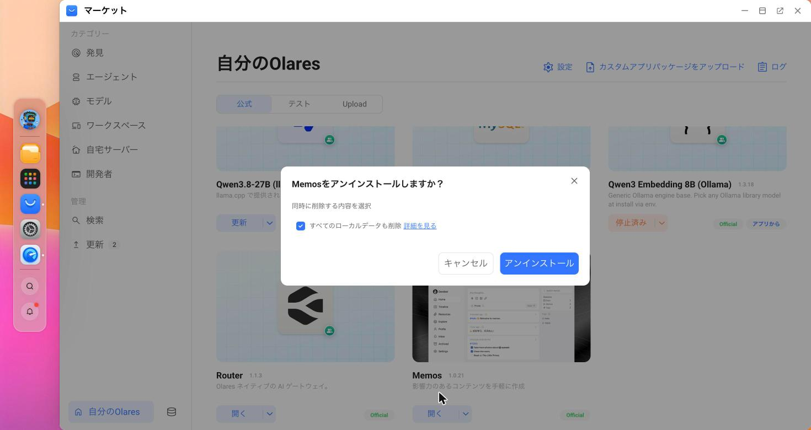
アンインストール をクリックします。ボタンが アンインストール中 になります。
完了すると一覧からアプリが消え、ランチャーのアイコンもなくなります。
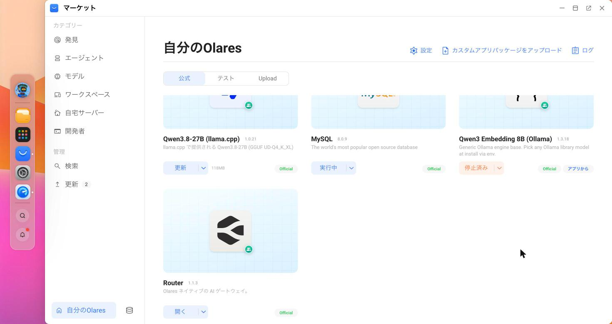
設定 の アプリ では、すべてのアプリの状態（緑＝実行中、赤＝停止済み）が一覧で分かります。アプリを選ぶと、権限やアクセス設定などの詳細を確認できます。
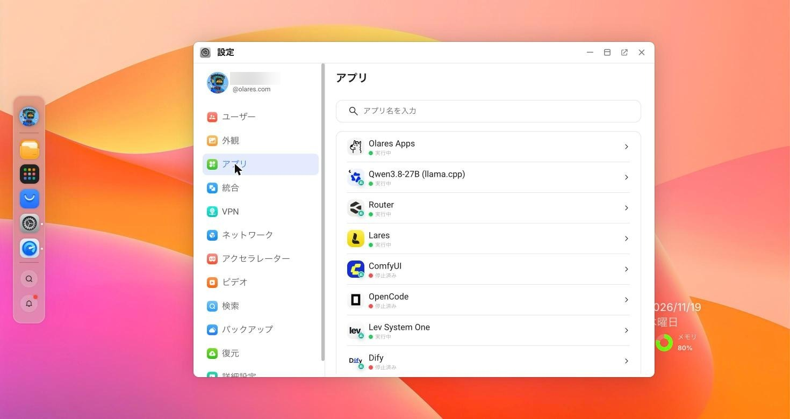
ダッシュボード の 概要 で、機器全体（クラスター）の CPU・メモリ・ディスク・GPU・ネットワークの使用状況が分かります。左の アプリ ではアプリごとの使用量を確認できます。
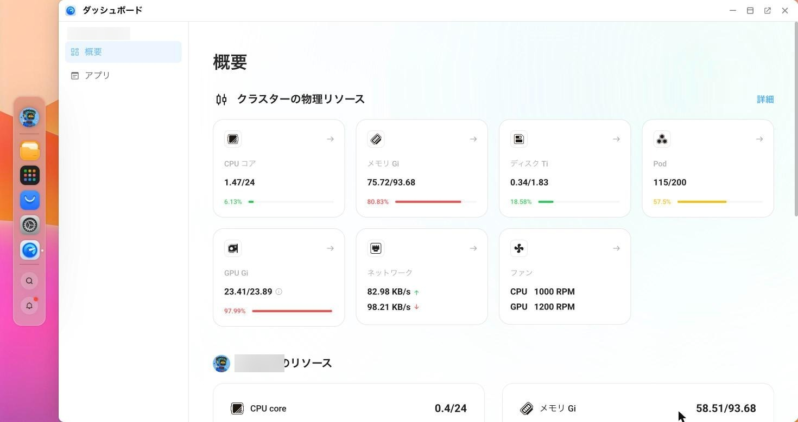
設定のトップでは、パスワード変更、ネットワークアクセスポリシー、Olares OSのバージョン確認ができます。
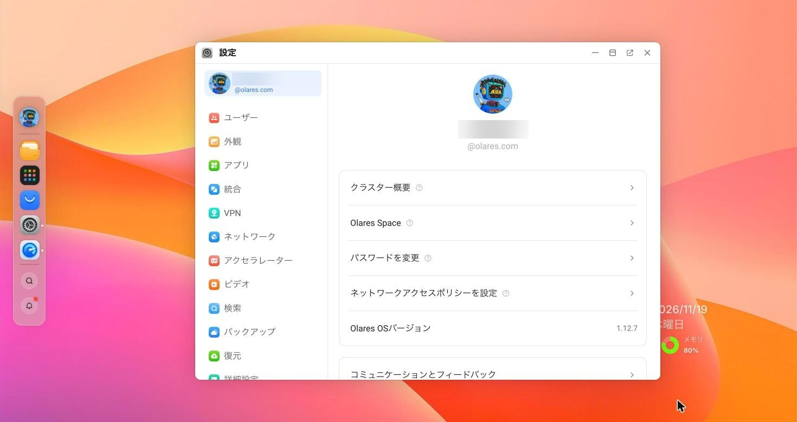
ドックの ファイルマネージャー で、Olaresに保存したファイルを扱います。
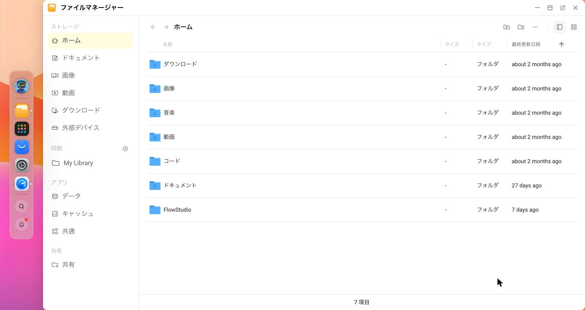
| ストレージ | ホーム（ドキュメント・画像・動画・ダウンロードなど）、外部デバイス（USBなど） |
|---|---|
| 同期 | My Library：PCなどと同期するライブラリ |
| アプリ | データ／キャッシュ：各アプリが使うフォルダ |
| 共有 | ほかのユーザーと共有しているフォルダ |
右上のボタンでアップロードやフォルダ作成ができます。PCのファイルをウィンドウにドラッグ＆ドロップしてもアップロードできます。
止まりません。× はウィンドウを閉じるだけです。リソースを解放したいときは8章の手順で停止します。
| 停止 | アンインストール | |
|---|---|---|
| リソース | 解放される | 解放される |
| データ | 残る | 「すべてのローカルデータも削除」を選ぶと消える |
| 元に戻すには | 「再開」ですぐ戻る | もう一度インストール |
共有アプリの印です（6章）。管理者が一度インストールすると、全ユーザーが自分のデスクトップから使えます。停止・削除は管理者だけができ、全ユーザーに影響します。
マーケット左メニューの 更新 に新しいバージョンのあるアプリが出ます。カードの 更新 ボタンで更新します。